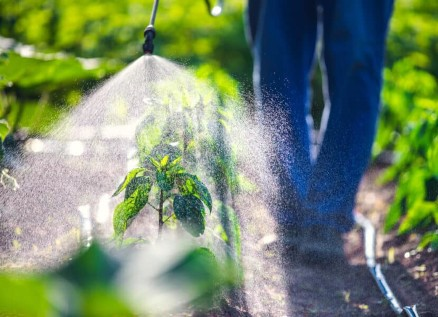

Titulo.



Localizada no centro norte da Bahia, a microrregião de Irecê é uma área de grande diversidade e riqueza cultural, composta por 19 municípios, sendo eles: América Dourada, Barra do Mendes, Barro Alto, Cafarnaum, Canarana, Central, Gentio do Ouro, Ibipeba, Ibititá, Irecê, Itaguaçu da Bahia, João Dourado, Jussara, Lapão, Mulungu do Morro, Presidente Dutra, São Gabriel, Souto Soares, Uibaí.
Com uma população vibrante de 74.507 pessoas, este território se destaca pela sua importância econômica, desde seus títulos mais antigos como a "Capital do Feijão" até suas atividades agrícolas atuais, especialmente na supervisão de cenoura, cebola e outras hortaliças. Além de sua relevância econômica, a região é marcada por um clima semiárido, inserido no Polígono das Secas, com uma média anual de pluviosidade de 582 mm. Com uma localização geográfica de latitude sul 11º18', latitude oeste 41º52', e uma altitude de 722 metros, a microrregião de Irecê também se destaca pela sua conexão com a Bacia Hidrográfica do São Francisco e pela presença de minerais como fosforita e zinco.
ÁREA:
314 km2.
DISTÂNCIA DA CAPITAL:
478 km.
COORDENADAS GEOGRÁFICAS:
Latitude Sul: llº18’
–
Latitude Oeste: 41º52’
-
Altitude: 722 metros.
População no último censo [2022]
74.507 pessoas.
DENSIDADE DEMOGRÁFICA:
199 habitantes por Km2.
Semiárido, seu território está incluído no Polígono das Secas. Sua pluviosidade média é de 582mm anuais. Chove de novembro a janeiro.
TEMPERATURA ANUAL:
Média: 22 ºC; Máxima 40 ºC; Mínima 17,7 ºC.

BACIA HIDROGRÁFICA:
São Francisco.
MINÉRIOS:
Fosforita e Zinco.
ASPECTOS ECONÔMICOS:
Irecê já teve importantes títulos como Capital do Feijão, Capital Mundial da Mamona. Atualmente se destaca na irrigação de cenoura, cebola e outras hortaliças.